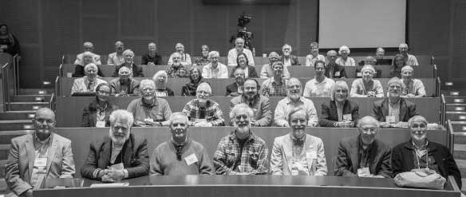

A celebration of the 50th anniversary of MIT Project MAC, now known as the Computer Science and Artificial Intelligence Laboratory (CSAIL), was held at MIT's Stata Center in Cambridge, Mass, on May 28 and 29, 2014.
The MAC celebration began in the Stata Center's Kirsch auditorium. There were slide presentations for a day and a half. The talks I liked best were historical reminiscences by Ivan Sutherland and Bob Metcalfe. A banquet for attendees on May 28th honored Professor Fano, the founding director of Project MAC.
CSAIL created a web site with  information about the celebration before the event.
They plan to update this site with photographs taken by an MIT photographer.
QuickTime video of all presentations is
information about the celebration before the event.
They plan to update this site with photographs taken by an MIT photographer.
QuickTime video of all presentations is  available on the CSAIL site.
(This is not streaming video: a big .mp4 file is downloaded for each presentation. Wait.)
available on the CSAIL site.
(This is not streaming video: a big .mp4 file is downloaded for each presentation. Wait.)
Daniel Dern wrote a  nice article on the reunion for the Boston Globe's web site,
and Tom Van Vleck wrote a short piece for the Events and Sightings column of the Annals of the History of Computing, Vol. 36, No. 4: Oct-Dec 2014, pp. 3-5.
nice article on the reunion for the Boston Globe's web site,
and Tom Van Vleck wrote a short piece for the Events and Sightings column of the Annals of the History of Computing, Vol. 36, No. 4: Oct-Dec 2014, pp. 3-5.
The LCS 25th anniversary celebration was held in 1988. The LCS 35th anniversary celebration was held in 1998. A Multics Reunion was held in the Stata Center in 2004.
Pictures from the MAC 50th Anniversary Celebration
Here are a few pictures of the MAC celebration taken by Bill Southworth and me; I wish we'd taken more. (MIT also had a photographer taking pictures.) Click for a larger view.
Others were also taking photos, and there is room for more photos or for links to other pages.

Multicians Group photo. Jason Dorfman CSAIL/MIT, CC license.
Multics Reunion
On May 29th, after the MAC anniversary celebration, many Multicians assembled in a Stata Center lecture hall to celebrate Multics. Paul Green did a fantastic job as the reunion organizer. This was the agenda:
| Daniela Rus, Howard Shrobe | Welcoming Remarks | |
| Peter Neumann | Introduction | |
| Fernando Corbató | "Early Days, Project MAC, CTSS, and Multics" | Slides from the talk |
| Andre DeHon | "SAFE: A New Foundation for Computer Safety and Security" | CRASH and SAFE |
| Michael Pandolfo | "Multics, The First 50 Years" | Slides from the talk |
| John Gintell, Fernando Corbató, Jerry Saltzer, Peter Neumann, Bob Freiburghouse | Panel Discussion and Audience Questions |
QuickTime video of the presentations is  available on the CSAIL Multics Reunion site. new
(This is not streaming video: a big .mp4 file is downloaded for each presentation. Wait.)
available on the CSAIL Multics Reunion site. new
(This is not streaming video: a big .mp4 file is downloaded for each presentation. Wait.)
Michael Pandolfo's talk proposed several initiatives for celebrating the 50th anniversary of Multics next year. A pointer to the slides from his talk is given above.
Pictures from the Multics Reunion
Click for a larger view.


We had planned to set up a YouTube channel named  Multicians for people to record video greetings,
but have so far only arranged one video, from Gary Dixon.
We can add more later.
Multicians for people to record video greetings,
but have so far only arranged one video, from Gary Dixon.
We can add more later.
People
People I saw there:
- Richard Barnes (CISL)
- Dan Bricklin (MAC)
- Dave Clark (MAC)
- Fernando Corbató (MAC)
- Emily Corbató (MAC)
- Robert Coren (CISL)
- Andre DeHon (MIT)
- Jack Dennis (MAC)
- Robert Fano (Director, MAC)
- Bob Frankston (MAC)
- Charles Frankston (MIT)
- Ed Fredkin (Director/MAC)
- Bob Freiburghouse (GE/CISL)
- Richard Gardner (MAC)
- Jim Gimpel (BTL)
- John Gintell (GE/CISL)
- Paul Green (MAC)
- BSG (MAC/CISL)
- Jerry Grochow (MAC)
- Carl Hoffman (MAC)
- Charlie Hornig (CISL)
- Doug Hunt (CISL)
- John Klensin (MIT)
- J. Spencer Love (MAC)
- Doug McIlroy (BTL)
- Dick Mills (MAC)
- Demaris Mills (MAC)
- John Luke Mills (CISL)
- Bob Mullen (CISL)
- Peter Neumann (BTL)
- Michael Pandolfo (CISL)
- Ken Pogran (MAC)
- David Rollow (CISL)
- David Rosenberg (HIS)
- Jerry Saltzer (MAC)
- Marlys Saltzer (MAC)
- Richard Scott (MAC)
- Olin Sibert (CISL)
- Tom Skinner (MAC)
- Richard Soley (CISL)
- Bill Southworth (MAC)
- Barbara Southworth (MAC)
- John Strayhorm (MIT)
- Melanie Weaver (GE/CISL)
- Stan Zanarotti (MAC)
- Mary Hopper (New Computer Museum)
- Tom Knight (MIT)
- Tracy Licklider (Northfield)
- Joel Moses (MIT)
- Howard Shrobe (MIT)
- Rick Smith (Cryptosmith)